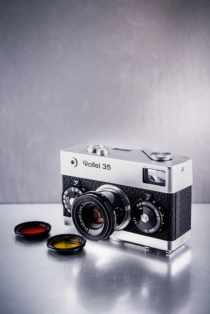

What is the Remini AI Filter?
Remini AI Enhancer is a powerful photo enhancement app running with the state-of-the-art AI technology . Restoring an old photo, enhancing facial features, and making an overall image clearer are some of the features that it provides. This is extra useful for those who want to turn old photos into current memories or those obsessed with their social media feeds.
How to Get the Remini AI Filter
Downloading and Installing the Remini App
If you want to use the Remini AI filter then you do not have it, then the first thing is to download this app on your mobile-valued smart device.
- Visit the App Store or Google Play Store: Search for "Remini" in your app store of choice.
- Download the App: Now click on download & wait for the download to complete & install the App.
- Sign Up for An Account: Launch the app and sign up using your email or sign-up using your social media profile.
Using the Remini Interface
After you have the app installed, It is important to understand the user interface of Remini. It is easy to use Remini with the following simple layout:
- Home Screen: The main screen displays all the functionalities present in it and a list of new tools that you can install and use in the app.
- Enhance Button: It is at the center of the bottom menu, where you can choose the photo that you need to enhance.
- My Projects: Containing all your previously edited photos.
Improving a Photo Using Remini
Since you have now understood the interface of the app, let us continue to improve a photo:
- Choose a Photo: Click on the "Enhance" button and choose any photo from your gallery. Alternatively, you may also take a new photo with the phone's camera.
- Select the Photo: Automatically Enhance — Select the Photo again, scroll up and tap on the "Enhance" button. This will make the AI process the image. It will take a few seconds, up to maybe a few minutes if the photo is more complex.
- Preview the Result: When the improvement is done, you can view a before-and-after slider of the photo. Just hit the save button if you are pleased with the scene.
Advanced Features In Remini
The following are advanced features in Remini that can help to enhance your photos even further:
- Portrait Enhancement: This feature will touch all your facial features in your portraits and make them clearer with more detail.
- Colorize: Apply a new shade scheme to all the black and white of your prints in an attempt to make it look relatively more current.
- Video Enhancement: Similarly, you can enhance videos as well to increase their quality and enhance the visibility of the Videos using Remini.
Take a look at this video tutorial to get insights and advice on how to use Remini AI Filter;
Best Results
To get the best from Remini AI Filter you might want to read the following tips:
- High-Resolution Photos: You should restore the highest resolution photo you have. It all starts from the quality of the start, the better the beginning the more amazing the end result.
- Bright lighting: Make sure the photo is good and bright. It is difficult to improve the quality of the image if it is poorly lit.
- Visible Faces: The app prefers photos where the face is not occluded. Faces that are obstructed or blurry may not be upscaled as well.
Common Problems and Troubleshooting
Despite being a powerful tool, Remini has a slight learning curve for some, you might face a few issues:
- Processing Errors: If the app has trouble enhancing an image, next time try using another one and it may help if you close and reopen the app.
- Subscription Plan: Paid features only. To access all features, make sure to check the pricing plans on the app.
- Unsatisfactory Results: If you get an unsatisfactory result we suggest that you experiment with the quality of the original or the image.
FAQs
- Is Remini free to use? Informatically speaking, Remini is available in a free and a premium version. Unlimited usage and extra functionalities are available through the paid tier, while a free version is also available but for a limited number of daily enhancements.
- Is Remini for restoring badly damaged photos? Remini is able to restore very old, hair textured or paper textured photo, it is more effective in polished old photos and surprisingly capable in restoring blurry, compressed, low resolution photos. Keep in mind that extremely blurred or pixelated photos may not be restored in entirety.
- Is there a Remini Desktop version? At present, Remini is mostly a mobile service. Nevertheless, you can actually run the app on your desktop with an Android emulator.
In Conclusion
The Remini AI Filter is an awesome photo enhancement and restoration tool for all your photo needs. Due to its user-friendly interface and excellent AI functions, it is suitable for both novice and expert users. If you simply want to revive your old picture and share it with your friends on social media, Remini is all you need. You can use this guide to use the Remini app to the fullest and turn your photos that have waned before into the most vivid. Use AI to improve your photos with Remini and travel to crystal-clear photos with just a few taps!